YOLOv4
- Paper : https://arxiv.org/abs/2004.10934
기존 YOLOv3까지 저자셨던 Joseph Redmon이 참여하지 않았습니다.
YOLOv4는 YOLOv3이후에 나온 딥러닝의 정확도를 개선하는 다양한 방법을 적용해 YOLO의 성능을 극대화 하는 방법을 설명합니다.
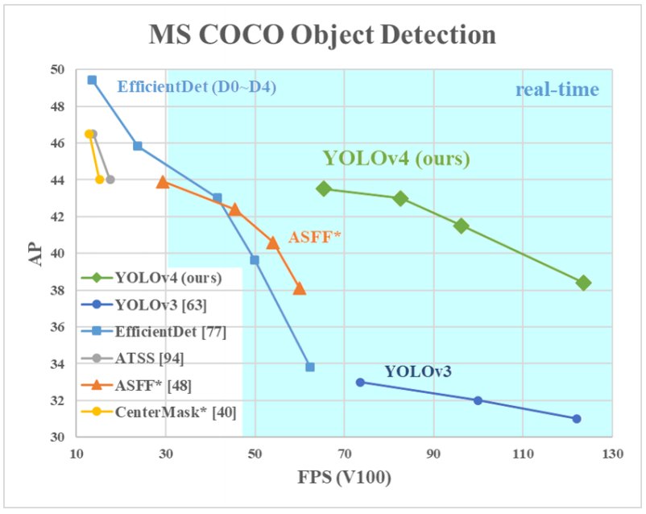
위에 표를 보면 속도는 유사하지만 정확도가 매우 많이 개선되었습니다.
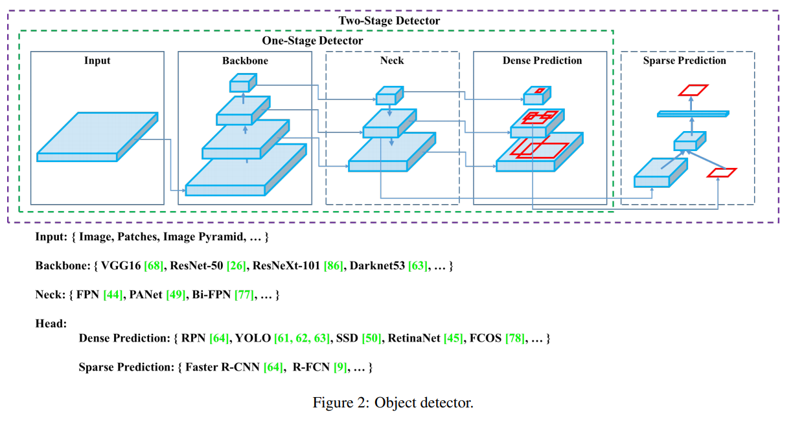
최근 표준화된 Object Detection의 모델 구조에 대해 요약하면 위와 같습니다. 깔끔하게 정리되서 한눈에 보기 쉽습니다.
YOLOv4는 다양한 기법들을 2가지 범주로 묶어서 설명합니다.
- BOF(Bag Of Freebies)
- BOS(Bag Of Specials)
Bag Of Freebies
추론속도는 유지하지만 학습 전략을 바꾸거나 학습 비용을 증가시켜 정확도를 높이는 방법
Data Augmentation
원본 데이터셋의 과적합을 막고 적은 데이터셋의 효과를 극대화하기 위한 방법
- Photometric Distortions : brightness, contrast, hue, saturation, noise
- Geometric Distortions : random scaling, cropping, flipping, rotating
- CutOut
- Random Erase
- MixUp
- CutMix
- GAN
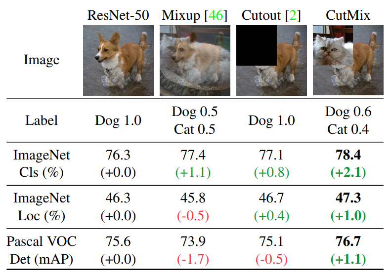
여기서 Random Erase는 CutOut과 비슷한데 CutOut은 제거한 영역을 0으로 채우는 반면, Random Erase는 랜덤한 값으로 채웁니다.
Semantic Distribution Bias
데이터셋에 특정 라벨이 많거나 하는 경우에 대한 불균형을 해결하기위한 방법
- Hard Negative Example Mining
Hard Negative란 Negative를 Positive라고 예측하기 쉬운 데이터입니다. 그래서 Hard Negative Mining이란 Hard Negative 데이터를 모아서 원래 데이터에 추가해서 학습하는 방법입니다. 이로인해 False Negative 오류에 강해집니다.
- Focal Loss
분류하기 쉬운 샘플의 경우 학습에 기여도는 낮기 때문에 비효율적이다. 이러한 문제를 해결하기 위한 새로운 손실 함수다.
기존 Cross Entropy에 라는 factor가 하나 포함되어있고 이 factor의 scale은 로 조절합니다. 이로인해 쉬운 예제의 경우 손실에 기여도를 낮출수 있다.
- Label Smoothing
데이터셋 라벨링의 실수 가능성을 포함하는 방법입니다.
고양이 사진이 있는 경우 라벨을 [고양이: 1 | 개: 0] 으로 정답을 라벨링하는 것이 아니라 [고양이: 0.9 | 개: 0.1]로 합니다.
new labels = one hot labels * (1 - label smoothing value) + label smoothing value / num classes
IF 0.2인 경우
1 * (1 - 0.2) + 0.2 / 2 = 0.9
0 * (1 - 0.2) + 0.2 / 2 = 0.1
Bounding Box Regression
GIOU(Generalized Intersection over Union)
CIOU(Complete Intersection over Union)
DIOU(Distance Intersection over Union)
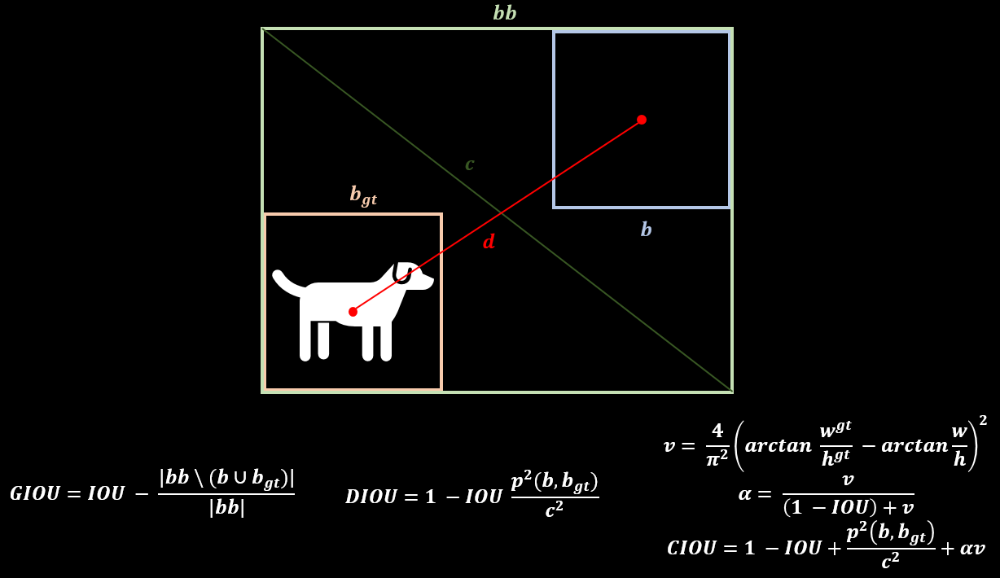
Bag Of Specials
약간의 추론 속도 증가를 통해 정확도를 높이는 방법
SPP
SPM(Spatial Pytamid Matching)에 의해 개발 된 모듈입니다. 원래 SPM 방법은 특징 맵을 동일한 d x d 블록으로 나눈 뒤, spatial pyramid를 형성하고 bag-of-word를 사용해 features를 추출합니다.
SPP는 딥러닝에 최적화 하기 위해 CNN와 SPM을 결합하고 bag-of word 대신 maxpooling을 사용합니다.
ASPP
ASPP(Atrous Spatial Pyramid Pooling)은 향상된 SPP로 DeepLapV3에서 제안된 방법입니다. 다양한 dilated ratio(6, 12, 18, 24)를 가지고 합성곱 연산을 한 뒤 concat하여 연산합니다.
약 7% 추론시간이 증가하지만 5.7% 정확도가 향상됩니다.
RFB
RFB(Receptive Field Block Net)
SE
SE(Squeeze-and-Excitation)
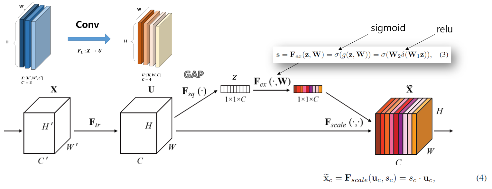
약 2% 연산량이 증가지만 1% 정확도가 향상 된다. 하지만 GPU에서 추론시간이 10% 증가한다.
SAM
SAM(Spatial Attention module) 0.1% 연산량이 증가하고 0.5% 정확도가 향상된다. GPU 추론시간에 영향이 없다.
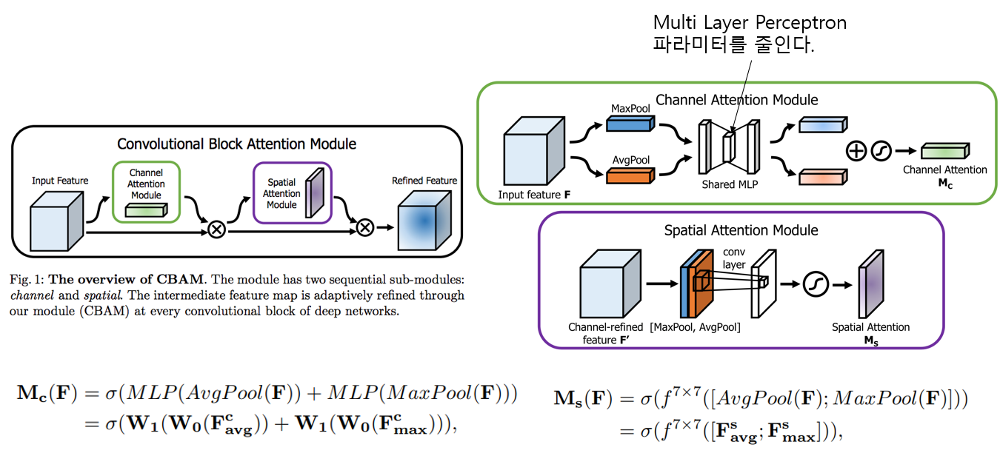
SFAM
SPAM(Scale-wise Feature Aggregation Module)은 SE 모듈을 사용해 multi scale이 연결 된 특징 맵에서 channelwise level re-weighting을 합니다.
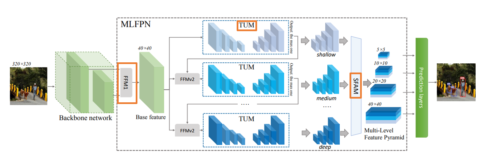
SFAM 논문에서 사용 된 모델의 전체적인 흐름을 나타냅니다.
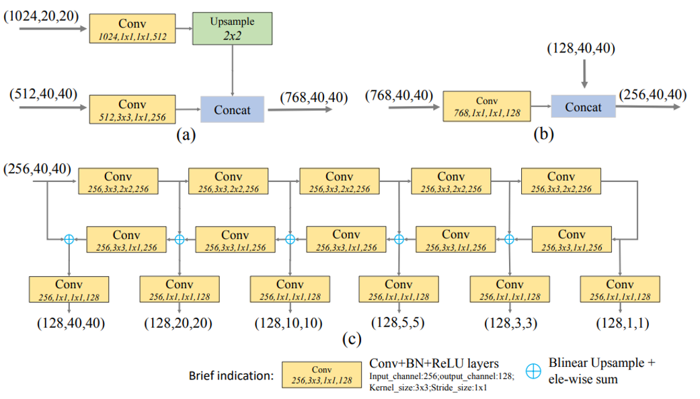
(a) : FFMv1 (b) : FFMv2 (c) : TUM
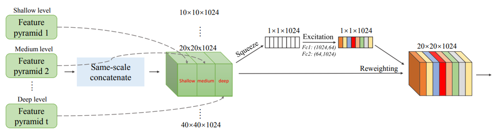
SFAM을 묘사한 그림입니다.
ASFF
ASFF(Adaptively Spatial Feature Fusion)
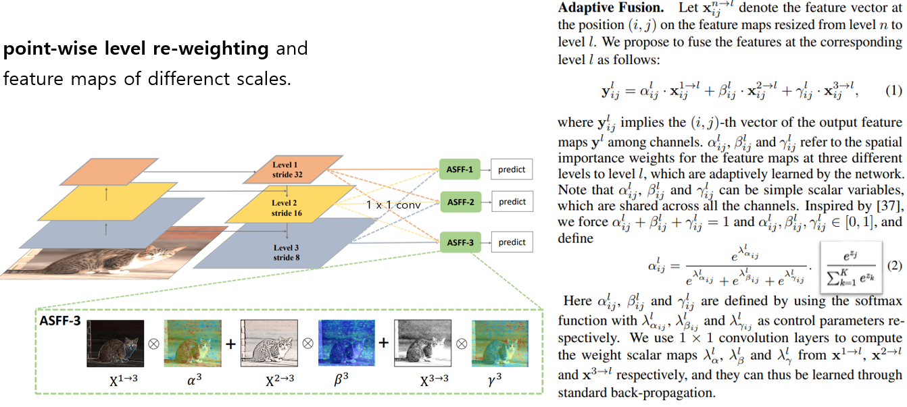
BiFPN
multi input weighted residual connections는 scale-wise level re-weighting을 실행한 다음 다른 스케일의 특징 맵을 추가하기 위해서 제안됩니다.
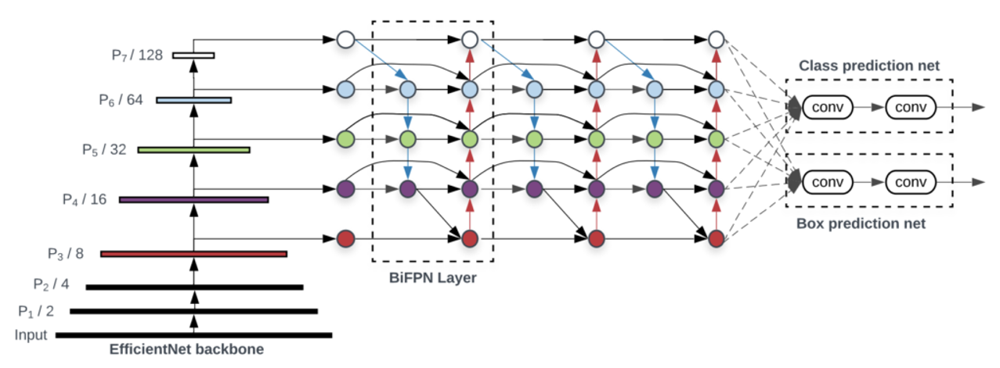
Activation Function
- LReLU, PReLU : ReLU가 0보다 작은 경우 기울기가 0이라는 문제를 해결
- ReLU6 ,Hard-Swish : Quantization network를 위해 설계됨
- SeLU : 네트워크를 정규화하기 위해서 사용된다.
- Mish
- ...
활성화 함수는 ReLU나 기존 활성화 함수 조합으로 생겨난 것이 많고 궁금한 내용만 찾아보시면 될 것 같습니다.
NMS
- NMS
- Soft NMS
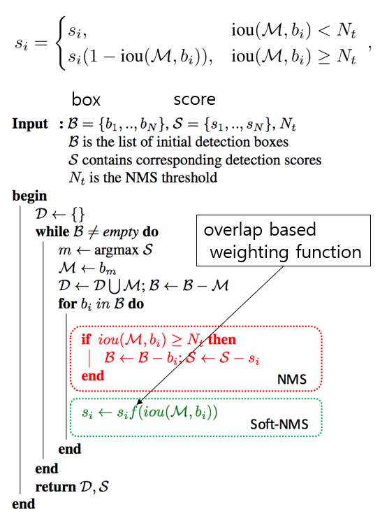
겹치는 bouning box를 후처리 해주는 작업은 위에 식으로 표현할 수 있습니다.
Selection of Architecture
Objective
- Input Network Resolution
- Convolution Layer Number
- Parameter Number
- Number of Layer Output
CSPResNeXt50 : ImageNet(Classification)
- CSPDarkNet53 : MS COCO(Object Detection)
classification이 최적인 모델이라고 해서 detector에서도 최적이 아닙니다.
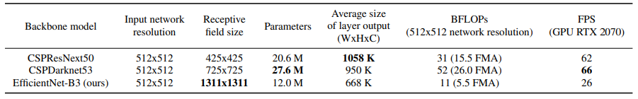
- 높은 입력 해상도 : 작은 크기의 객체를 검출
- 더 많은 계층 : 증가 된 해상도를 커버하기 위한 더 높은 receptive field
- 더 많은 매개변수 : 크기가 다른 여러개의 객체를 검출하는 모델의 용량을 늘리기 위함
제일 합당한 모델은 DarkNet이라고 할 수 있습니다.
YOLOv3는 CSPDarkNet53에 SPP 블록을 추가하고 YOLOv3에서 사용되는 FPN대신 PANet을 사용합니다.
CSP
CSP(Cross-Stage-Partial-Connections)
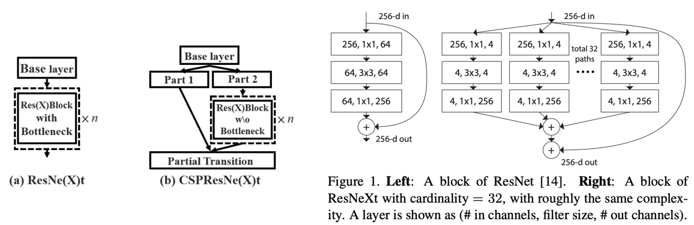
특징 맵 채널의 절반만 Residual Block을 통과하기 때문에 Bottleneck layer를 사용 할 필요가 없습니다.
New Method
SAT
Mosaic
- 4개의 학습 이미지를 혼합한다.
- Mini Batch가 크지 않아도 된다.(혼합 자체로 효과적임)
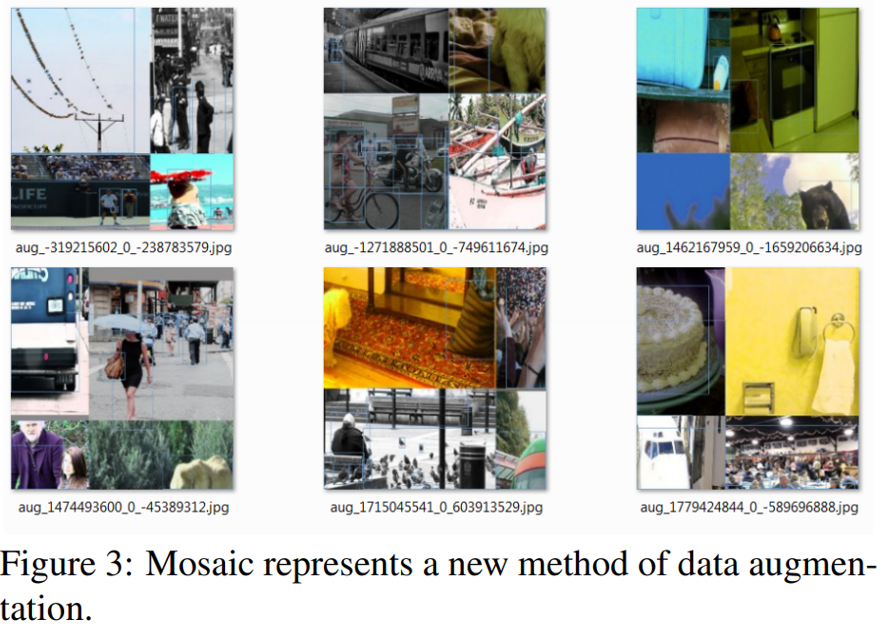
modified SAM
modified PAN
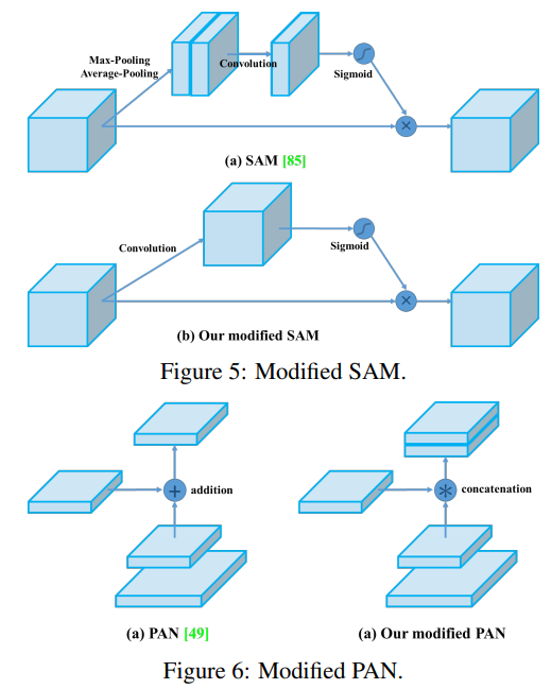
- Cross mini-Batch Normalization(CmBN)
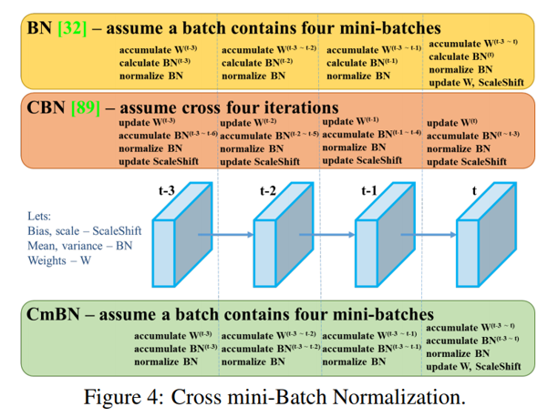
Activation
- ReLU, LReLU, PReLU, ReLU6, SELU, Swish, Mish
Bouding box regression loss
- MSE, IoU, GIoU, CIoU, DIoU
Data Augmentation
- CutOut, MixUp, CutMix
Regularization method
- DropOut, DropPath, Spatial DropOut, or DropBlock
Normalization of the network activations by their mean and variance
- Batch Normalization (BN)
- Cross-GPU Batch Normalization (CGBN or SyncBN)
- Filter Response Normalization (FRN)
- Cross-Iteration Batch Normalization (CBN)
Skip-connections
- Residual connections
- Weighted residual connections
- Multi-input weighted residual connections
- Cross stage partial connections (CSP)
YOLOv4
- Backbone : CSPDarkNet53
- Neck : SPP, PAN
Head : Yolov3
Bag of Freebies for backbone : CutMix, Mosaic, DropBlock, Class label smoothing
Bag of Specials for backbone : Mish, CSP, Muiti-input weighted residual connections(MiWRC)
Bag of Freebies for detector : CIoU, CmBN, DropBlock, Mosaic, Self Adversarial Training, Eliminate grid sensitivity, Using multiple anchors for a single ground truth, Cosine anneling scheduler, Optimal hyper parameters, Random training shapes
Bag of Specials for detector : Mish, SPP, SAM, PAN, DIoU NMS
Experiments
- training steps : 8,000,000
- batch size : 128 / mini batch size 32
- learning rate : 0.1 warm-up : 1000
- momentum : 0.9 / weight decay : 0.005
- BoF experiments : data augmentation 검증
- BoS experiments : activation function 검증
- genetic algorithm : hyper parameter search (lr : 0.00261, momentum : 0.949, IoU thresholds : 0.213, loss normalizer : 0.07)


- S : Eliminate grid sensitivity : sigmoid에 1.0을 초과하는 계수를 곱해 object가 검출되지 않는 grid의 영향을 제거한다.
- M : Mosaic
- IT : IoU threshold (single GT > IoU threshold)
- GA : genetic algorithm (hyperparameter search)
- LS : class label smoothing
- CBN : CmBN
- CA : cosine anneling
- DM : dynamic minibatch size
- OA : optimized anchors

- classification accuracy가 높다고 detector accuracy가 항상 높은건 아닙니다.
- CSPResNet50의 classification accurac가 높지만 detector accuracy는 CSPDarkNet53이 더 높습니다.
- CSPResNet50에 BoF, Mish를 사용하면 classification accuracy는 높아지지만 detector accuracy는 낮아집니다.
- CSPDarkNet53에 BoF, Mish를 사용하면 detector accuracy가 높아집니다.

- BOF, BOS를 추가한 뒤 mini batch size가 성능에 거의 영향을 미치지 않습니다.
- 즉, 고가의 GPU는 불필요합니다.
Result
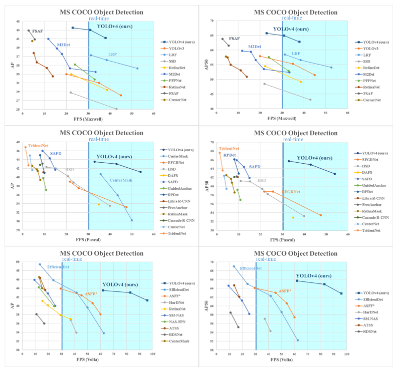